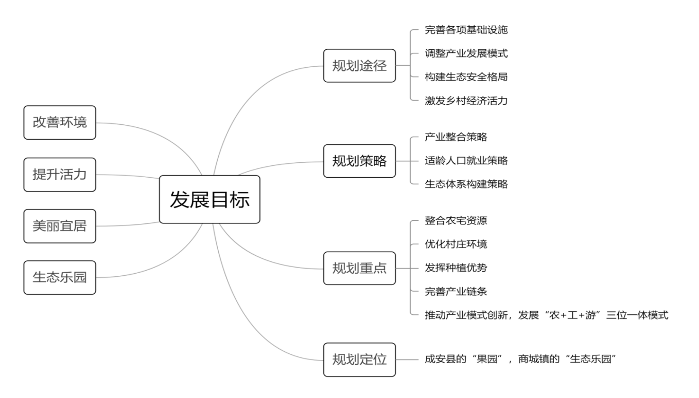
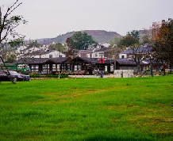
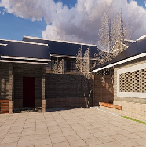
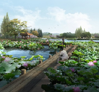

意见反馈
意见反馈
时间:2021-06-17 14:44 来源:规引团队 作者:王某某
高母村，全村总面积237.91公顷（图3-2），地处河北省邯郸市成安县境西部，距县城10公里。隶属于商城镇，位于镇政府驻地东偏北2.3公里处。周边临近三条交通性快速车行道，分别为313省道，315省道，邯郸绕城高速，交通条件便利（图3-3)
规划前村庄问题：
（1）公共建筑较少，缺少良性交往空间，广场、游园等交往娱乐场所无法满足需求。
（2）村庄生态环境尚可，自然气候条件虽好，但缺乏合理的资源整合利用，生态系统薄弱。
（3）所有对环境有破坏影响的产业均发展受限且多家厂房已倒闭，传统农业不足以支撑村庄经济，导致村庄经济活力缺失。
（4）现有基础设施较完善，但缺乏污水集中处理及垃圾无害化处理设施。
解决办法：
通过对高母村现状问题的分析，本团队从实际出发，因地制宜，制定总体规划框架示意如图3-6，在规划途径上，旨在通过完善村庄各项基础设施来改善村庄基本环境；调整村庄产业发展模式来提升村庄经济活力；构建村庄生态安全格局来提高村庄环境软实力，最终实现生产高效，生活舒适，生态宜居的“生态乐园”乡村目标。对该村庄做出的规划定位为：成安县的“果园”，商城镇的“生态乐园”。将整合农宅资源，优化村庄环境；发挥种植优势，完善产业链条；推动产业模式创新，发展“农+工+游”三位一体模式确定为村庄规划重点。
具体行动：
（1）三区三线的划定：
根据三区三线的划定表,对高母村划定生态空间、农业空间和建设空间。其中生态空间包括生态林地，共32.33公顷；农业空间包括耕地和其他用地等，共138.02公顷；建设空间包括农村居民点建设用地和对外交通用地等，共67.56公顷。
（2）三区三线管控要求：
严禁占用生态用地进行破坏生态景观、污染环境的开发建设活动；对具有特殊生态功能的生态用地，严禁任意改变用途。保护好村内生态空间，做到慎砍树、禁挖沟、不填湖。基本农田经划定，任何单位和个人不得改变或占用。国家能源、交通、水利、军事设施等重点建设项目选址确实无法避开基本农田保护区，需要占用基本农田，涉及农用地转用或征收土地的，必须经国务院批准。依照三调现状及高母村集聚提升类村庄的战略定位，为满足村庄经济发展，与周围区域整体协调，对村庄住宅用地等进行了调整，对建设用地边界进行确定。
（3）基础设施建设：
高母村环境规划中，进行垃圾处理规划，通过分散布置垃圾收集点，使其服务半径能够覆盖整个村域范围；垃圾箱的放置以街道走向为主，方便居民使用。对高母村进行污水处理规划，其污水处理中，分为两种，一种是排水管道，以村庄街道走向为主，做到管道入户；另一种是排水砖沟，沿村庄主要街道敷设，集中收集污水，便于通向商城污水厂。污水处理，近期依托坑塘生态净化，远期对接成安县规划污水管网。明确高母村道路交通组织，进行道路规划设计，对外交通要道为连接村庄与313省道，路面宽度不少于5米，全面实现柏油沥青路面，增加绿化。对内交通根据道路类型和村庄需求增设绿化。 规划布局产业片区，形成“四区”的产业发展布局。产业集聚区为高环集团用地范围，旅游休闲区包括坑塘改建成湿地游园、砖厂遗址修复为生态游园等；建设发展区包括村民住宅以及村民日常生活场所；高效农业区为村内基本农田地域范围和省道两侧防护林。进行宅基地布局与住房建设等。
改造成果：
合理利用了闲置宅基地，提高居民点的土地利用率，对居民点用地进行整体规划，建筑布局规整方正，建筑风貌基本统一，建筑质量良好
考虑国家及地方环保和生态环境建设的要求，村庄内的工矿企业大多已处于关停状态。本次规划结合当地政府及群众的需求，依据本地资源和市场需求，重点发展休闲娱乐产业，对工矿业遗址进行改造利用，从而实现产业转型，村民富裕。
  